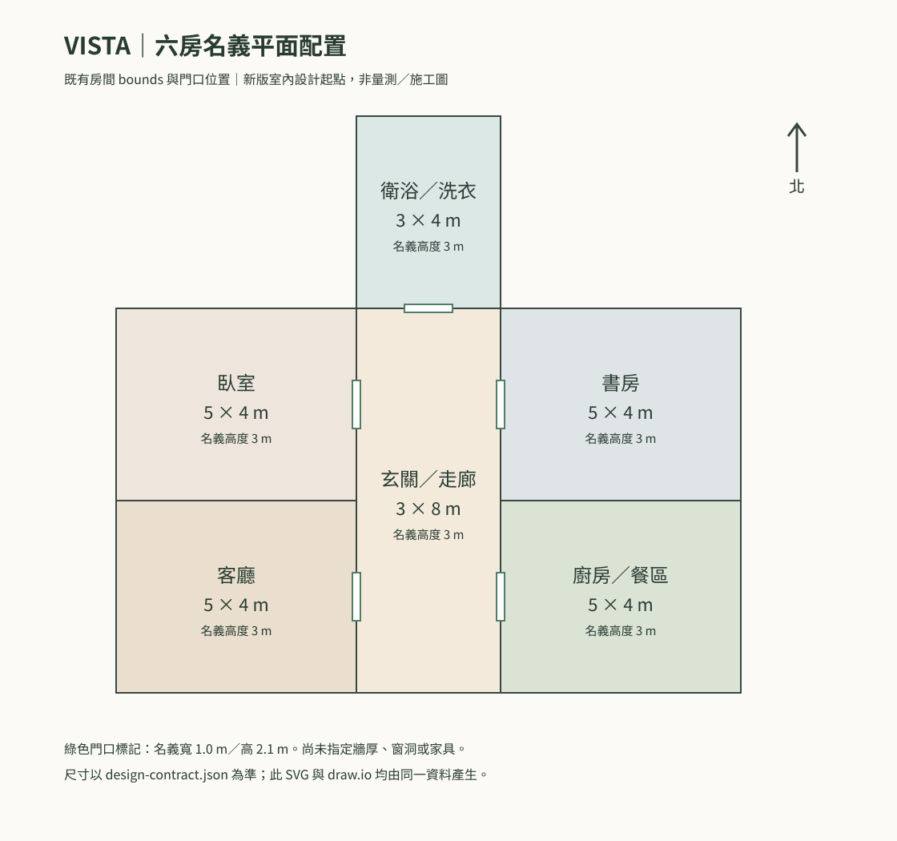

VISTA 寫實室內與物件參考 R1
台灣當代住宅方向：六個空間、三個核心日用品。這些圖片是建模參考；尺寸、門窗與零件形狀仍需在同一份 Blender 模型中校正。
六房名義平面配置

玄關／走廊

1672 × 941 px · 點圖片開啟原圖
客廳

1672 × 941 px · 點圖片開啟原圖
廚房／餐區

1672 × 941 px · 點圖片開啟原圖
臥室

1672 × 941 px · 點圖片開啟原圖
書房

1672 × 941 px · 點圖片開啟原圖
衛浴／洗衣

1672 × 941 px · 點圖片開啟原圖
不鏽鋼鍋

1672 × 941 px · 點圖片開啟原圖
陶瓷杯

1672 × 941 px · 點圖片開啟原圖
對開冰箱

1672 × 941 px · 點圖片開啟原圖